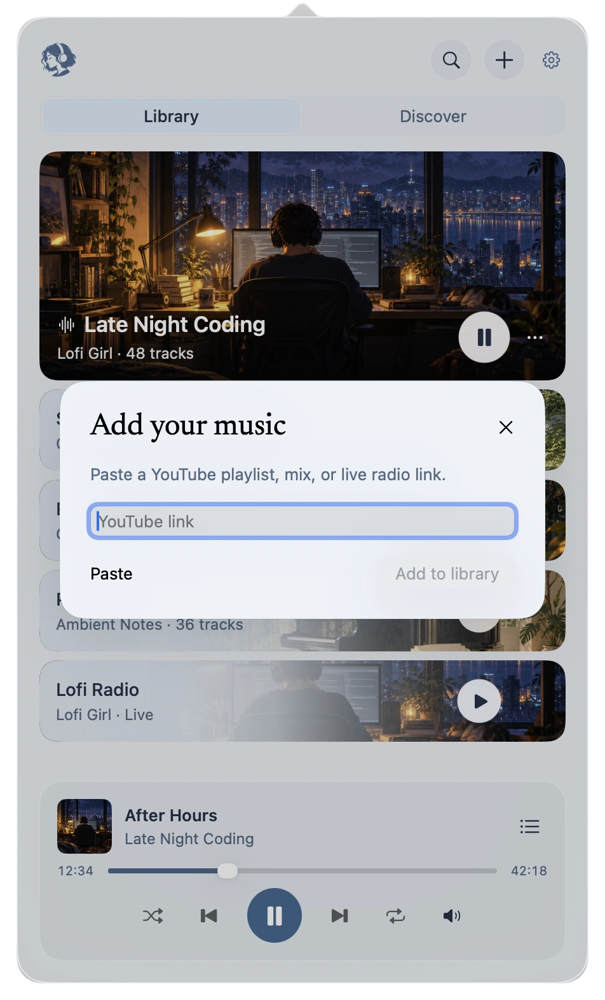
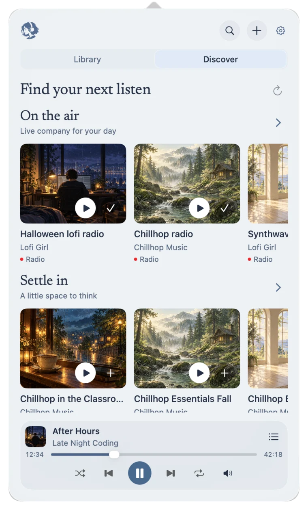

Background music.
Made for your Mac.
A native macOS menu bar player for playlists, mixes, and live radio. Listen in the background, without ads.
DownloadAdd your
own playlists.
Already have something you love listening to? Paste a YouTube link into geet and add it to your library.
Bring your playlists, mixes, and live radio together. Your next listen is always close by.


Your next listen,
already picked.
Discover brings together curated playlists, mixes, and live radio, with fresh selections added frequently.
Find a little focus, company for the afternoon, or a station to leave on all evening. Preview anything, then save your favourites to your library.
Play. Pause. Skip.
Your Mac’s media keys work with geet. Pause when someone needs you, skip a track, then get back to what you were doing.
No need to open the player or switch apps.
Ad-free listening.
Settle into a playlist or a mix without an ad breaking your concentration.
Just press play and let the music run.
A few things
to know.
What Mac do I need?
geet requires macOS 26 or later. It’s currently tested on Apple Silicon. Intel Macs haven’t been validated yet.
Can I add my own music links?
Yes. Add a public or unlisted YouTube playlist or video, including mixes and live radio. Private playlists aren’t supported.
How does Discover stay fresh?
The curated selection is updated frequently. Open Discover and refresh to find the latest playlists, mixes, and radio stations, without updating the app.
Do I need an account?
No. There’s no geet account or YouTube sign-in. Your library stays on your Mac, and geet has no analytics.